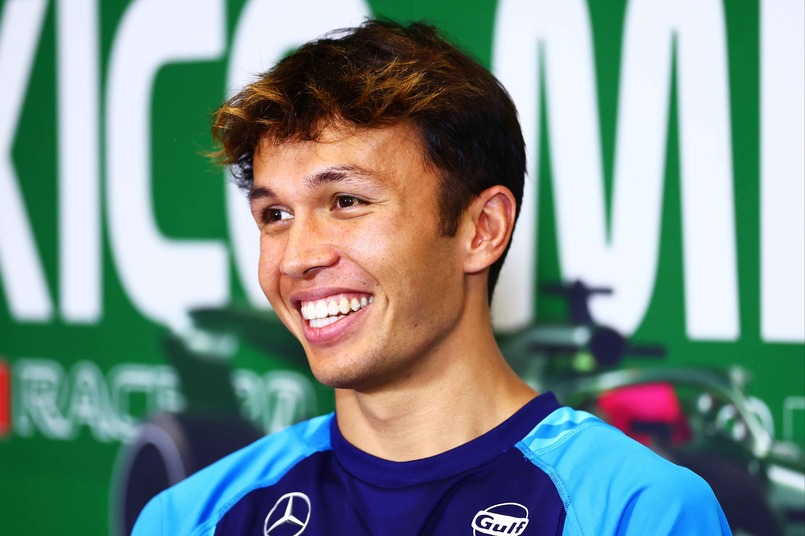
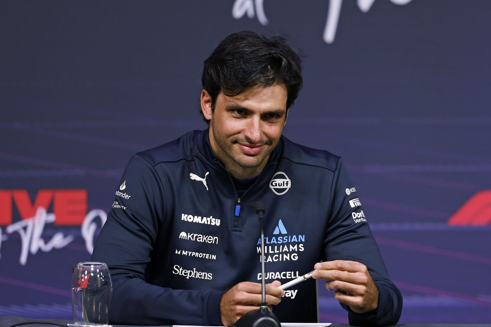

Williams Racing

Atlassian Williams Racing
Team Principle: James Vowels
Drivers: Alex Albon, Carlos Sainz
Car: FW47
Reserve Driver: Luke Browning
Academy Drivers: Lia Block, Luke Browning, Victor Martins, Alessandro Giusti, Oleksandr Bondarev
Alex Albon
Alex Alon joined Formula 1 as a RedBull junior but was dropped from the team after 2 years racing for them and moved to Williams in 2022. He's raced alongside Nicholas Latifi, Nyck de Vries, Logan Sargent, Franco Colapinto and now Carlos Sainz. This year he has driven well and is currently 8th in the championship, proving himself as an amazing driver, despite his time at RedBull.
Race Engineer: James Urwin
Carlos Sainz
Carlos Sainz joined Formula 1 in 2015 also as a RedBull junior however never went to the main team instead moving to Renault and McLaren before Ferrari for 4 years as a teamate to Charles Leclerc. He joined Williams after his seat was taken by Lewis Hamilton as he believes ion the teams potential. It seams his belief in the team was not misplaced as the car this year is quite fast and his is getting to used to it and performing well.
Race Engineer: Gaetan Jego